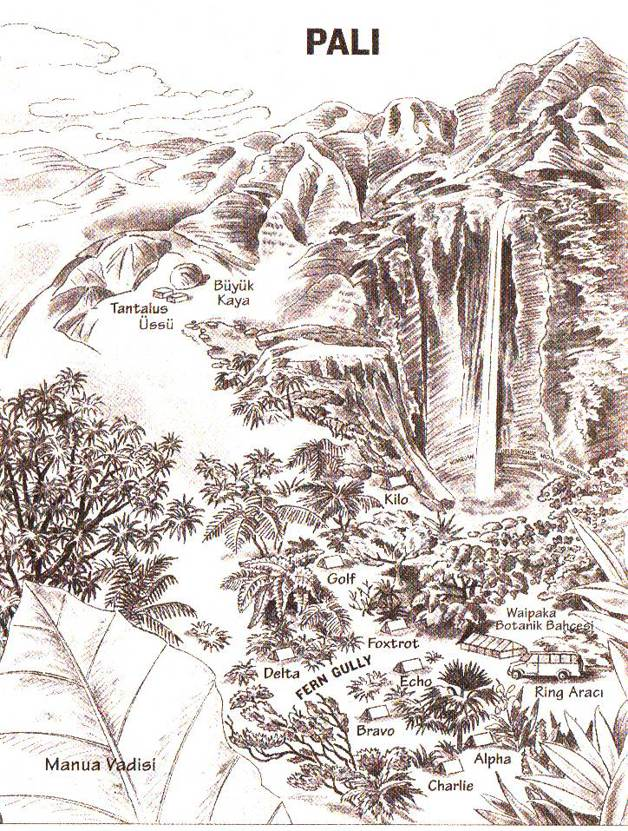

Önsöz
Nasıl Bir Dünyada Yaşıyoruz?
Ünlü doğa bilimci David Attenborough 2008 yılında günümüz okul çocuklarının etrafımızdaki sıradan bitkileri ve böcekleri bile tanıyamadıkları konusunda endişelerini dile getirmişti. Oysa daha önceki kuşaklar için böyle bir sorun söz konusu değildi. Göründüğü kadarıyla günümüz çocukları doğadan ve doğayla iç içe olmaktan koparılmışlardı. Bu durumun nedeni olan birçok faktör vardı: Şehir yaşamı; açık alanların kalmayışı; bilgisayarlar ve internet; çok fazla ev ödevi verilmesi. Fakat sonuçta çocuklar artık doğaya çıkmıyorlar ve doğayla doğrudan bir tecrübe yaşayamıyorlardı. İşin tuhaf yanı, bu sorunun tam da Batıda çevreyle ilgili endişelerin artması ve çevreyi korumak için iddialı adımların atılması sırasında ortaya çıkışıydı.
Çocukları çevre bilinciyle eğitmek yeşiller hareketinin en önemli girişimiydi; böylece çocuklara hiç tanımadıkları bir şeyi korumaları öğretiliyordu. Ne ki, bunun geçmişte çevre bozulmasına yol açan iyi niyetli formülle tıpatıp aynı olduğu gözden kaçmadı. En canlı örneği, Amerikan ulusal parklarının yok edilmesi ve orman yangınlarını önleme amaçlı Amerikan politi kasıydı. Eğer insanlar korumaya çalıştıkları çevreyi gerçekten anlasalardı, bunun gibi politikalar hiç yürürlüğe girmezdi.
Sorun bunu anladıklarını sanmalarıydı. Yeni kuşak okul çocuklarının daha kararlı yetişecekleri savı tartışmaya açıktır. Her şey bir yana, okulda çocuklara her sorunun bir cevabı olduğu öğretilir; ne var ki, gençler gerçek dünyada hayatın birçok belirsiz, gizemli, hatta bilinemeyecek yönleri olduğunu keşfederler. Sizi bir böcek ısırdığında, bir kelebeğin kanadı elinizde leke bıraktığında, kozasını ören bir tırtıl gördüğünüzde bilinemez ve gizemli bir dünyanın içinde olduğunuzu düşünürsünüz. Ne kadar çok bakarsanız doğa sizin için o kadar esrarengiz olur ve ne kadar az şey bildiğinizi fark edersiniz. Güzelliğinin yanı sıra ne kadar yaratıcı, ne kadar savurgan, ne kadar saldırgan, acımasız, asalak ve şiddet dolu olduğunu da görürsünüz. Doğanın bu özelliklerini ders kitaplarında pek de bulamazsınız.
Tecrübeyi doğrudan yaşamakla öğrenilecek en önemli şey, bütün öğeleriyle ve birbirine dolanmış bağlantılarıyla doğal dünyanın çok karmaşık bir sistemi olduğu ve bu nedenle onun davranışını anlayamayacağımızdır. Bunu anladığımızı sanmak, başka bir karmaşık sistem olan borsayı anladığımızı sanmak kadar aldatıcı olacaktır. Eğer birisi çıkıp da birkaç gün içinde hangi hisselerin ne kadar artacağını söylerse onun bir şarlatan olduğunu düşünürüz. Oysa bir çevreci çevre veya ekosistem hakkında böyle bir iddiada bulunursa onu büyük bir ihtimalle ciddiye alırız.
İnsanoğlu karmaşık sistemlerle etkileşimi sırasında bundan kendisine hep yarar sağlamayı bilmiştir. Ama bu yararı o sistemi yöneterek sağlamıştır, anlayarak değil. Yöneticiler sistemle etkileşirler: Bir şey yapıp sonucunu izlerler, sonra da istedikleri yararı sağlamak için başka bir şey yaparlar. Sürekli tekrarlanan sonsuz bir etkileşim bize sistemin ne yapacağına emin olamayacağımızı öğretir... Bekleyip görmek zorundayızdır. Ne olacağına dair bir his duyabiliriz. Çoğu zaman haklı çıkabiliriz de... Ama hiçbir zaman emin olamayız.
Doğal dünyayla etkileşirken kesinlikten yoksunuzdur. Her zaman da böyle olacaktır.
Gençler doğal dünyayı nasıl öğrenebilirler? En güzel yolu bir yağmur ormanında, bütün önyargılarımızı bir anda sarsıverecek, uçsuz bucaksız, konforsuz, tehlike dolu ve muhteşem güzellikteki bir ortamda zaman geçirmektir.
BİTMEDİ
MICHAEL CRICHTON
28 Ağustos 2008

YEDİ DOKTORA ÖĞRENCİSİ
Rick Hutter İnsan-bitki ilişkisini ve değişik yörelerdeki halkların kullandıkları ilaçlan inceleyen etnobotanikçi.
Karen King Araknolog (örümcekler, akrepler ve uyuzböcekleri uzmanı). Savaş sanatlarında usta.
Peter Jansen Zehirler ve zehirlenmeler alanında uzman.
Erika Moll Entomolog (böcekbilimci).
Amar Singh Bitki hormonlarını inceleyen botanikçi.
Jenny Linn Hayvanların ve bitkilerin sinyal vermek için kullandıkları kokuları inceleyen biyokimyager.
Danny Minot Bilimsel lengüistik şifreler ve paradigma!
dönüşümler konusunda tez yazan doktora öğrencisi.
BİRİNCİ KISIM
T E N S Ö R